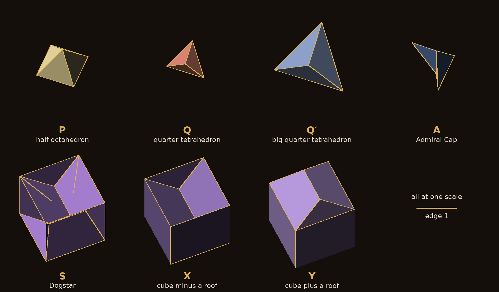
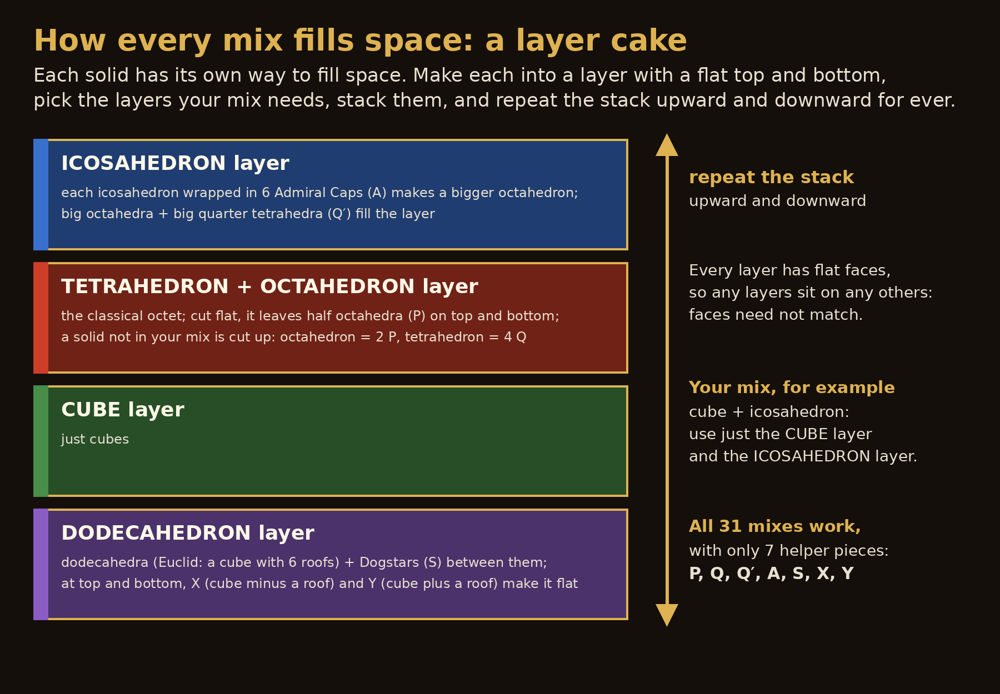
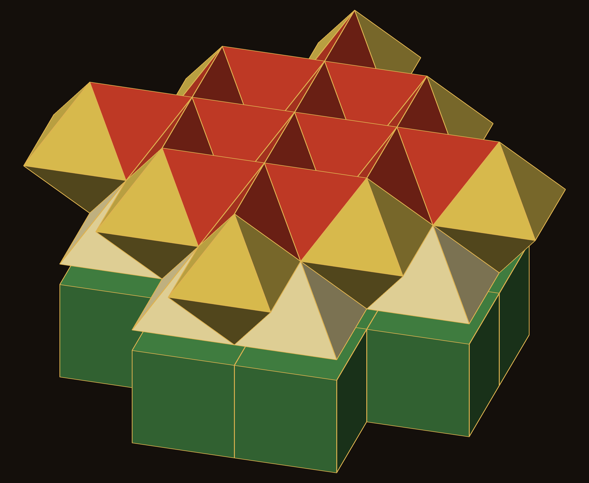

Theorem: for each of the 31 sets of Platonic solids of edge 1 there is a filling of space that uses exactly those solids, with connectors from a kit of seven pieces
We write D, I, C, T and O for the dodecahedron, icosahedron, cube, tetrahedron and octahedron, the letters of DICTO (the key of DICTO's emblem), all regular and of edge 1, and φ = (1 + √5)/2. A mix is a non-empty set M of these five; there are 31. M fills space if there is a tiling of space (tiles with disjoint interiors covering space, finitely many meeting any bounded set) whose tiles are congruent copies of the solids of M, every solid of M used, together with congruent copies of finitely many other pieces, the connectors, none of them a Platonic solid of edge 1. Tiles need not meet face to face.
Choose any of the five Platonic solids, one, several or all, all with edges of the same length. The theorem says they can always be packed together with no gaps at all, using a small fixed set of helper pieces, most of them cut from the solids themselves.
| Connector | What it is | Volume |
|---|---|---|
| P | half octahedron of edge 1 (a square pyramid) | √2/6 ≈ 0.23570 |
| Q | face pyramid of the tetrahedron of edge 1: a face joined to the centre (#44) | √2/48 ≈ 0.02946 |
| Q′ | Q at size L = φ²/√2 ≈ 1.8512 | φ⁶/96 ≈ 0.18692 |
| A | one of DICTO's six Admiral Caps: the octahedron of edge L minus the icosahedron of edge 1 in Pacioli's position, cut into its six congruent parts, one round each corner [3] | φ/12 ≈ 0.13484 |
| S | the Dogstar: a cube of edge φ minus six of Euclid's roofs, one on each face, pointing in [6, 7] | φ/2 ≈ 0.80902 |
| X | a cube of edge φ minus one roof (on one face, pointing in) | φ³ − (1 + 3φ/2)/6 ≈ 3.66489 |
| Y | a cube of edge φ plus one roof (on one face, pointing out) | φ³ + (1 + 3φ/2)/6 ≈ 4.80724 |
Table 1. The kit. A roof is one of Euclid's six roofs on the cube of edge φ that make the dodecahedron of edge 1 [6]; its volume is (1 + 3φ/2)/6 ≈ 0.57118. P, Q, Q′ and Y are convex (Y is the dodecahedron cut by the planes of five faces of its cube); A, S and X are not. Volumes from volumes.py, closed forms checked against direct computation.

The idea is a layer cake. Each solid has its own way of filling space; we make each of those into a layer with flat top and bottom, then stack the layers you need.

Lemma 1 (stacking). If slabs between parallel planes are each tiled (each slab turned so that its planes are horizontal), the slabs stacked in any order, and the stack repeated by translation across the planes, tile space.
Proof. Slabs with the same normal and adjacent faces on a common plane have disjoint interiors and their union is a thicker slab; repeating it by the translation of its thickness covers space. No face-to-face condition is needed across a plane. ∎
So it is enough to give, for each solid, a slab that contains it and otherwise only connectors from K.
The cube's layer is just cubes.
Lemma 2 (cube slab). Edge-1 cubes tile any slab of integer thickness between planes parallel to a face. ∎
The tetrahedron and the octahedron share the classical octet. Cut flat, it leaves half octahedra on its faces; a solid that is not in the mix is cut into connector pieces.
Lemma 3 (octet slab). Let s = 1/√2. The octet of edge 1 has its corners at the points s(x, y, z) with x + y + z even, an octahedron centred at every point with x + y + z odd and a tetrahedron on the four even corners of every cube of side s [1]. For every integer k the plane z = ks is tiled exactly by the square equators (edge 1) of the octahedra centred in it. Hence for integers k < m the slab ks ≤ z ≤ ms is tiled by the whole tetrahedra and octahedra between, and by half octahedra P on its two faces. If O is not in the mix, each octahedron is cut into two P; if T is not, each tetrahedron into its four face pyramids Q.
Proof. The octahedra centred in the plane z = ks are those at s(x, y, k) with x + y + k odd; their equators are the squares |X − sx| + |Y − sy| ≤ s, centred on one colour of a checkerboard of spacing s, and these squares tile the plane. An octahedron centred at height js spans (j − 1)s ≤ z ≤ (j + 1)s, and a tetrahedron in a small cube spans js ≤ z ≤ (j + 1)s, so every tile not centred in a face plane lies entirely between two consecutive planes z = js. ∎
The icosahedron fits exactly inside a larger octahedron, Pacioli's figure, and DICTO's six Admiral Caps fill the rest. These large octahedra make their own, larger octet.
Lemma 4 (icosahedron slab). Let L = φ²/√2. The icosahedron of edge 1 with corners ½(0, ±1, ±φ) and their cyclic permutations lies in the regular octahedron |x| + |y| + |z| ≤ φ²/2, of edge L, with its twelve corners on the octahedron's edges, dividing each in the golden ratio [7]; the rest of the octahedron consists of the six Admiral Caps A. In the octet of edge L, with octahedron = icosahedron + six A and tetrahedron = four Q′, the slab between two (111) layer planes is tiled by whole pieces.
Proof. Each corner ½(0, ±1, ±φ) has |x| + |y| + |z| = ½(1 + φ) = φ²/2, so it is on the octahedron's surface, and on the edge between two of its corners; the icosahedron, the convex hull of its corners, lies inside. The octet is a union of layers between consecutive planes parallel to a face of its tetrahedra [1], each layer made of whole tetrahedra and octahedra. ∎
The dodecahedron is Euclid's cube with a roof on each face. Dodecahedra on alternate cubes, with Dogstars in between, fill space. At a flat edge the roofs stick out, so two new pieces finish it off: X, a cube with the roof that pokes in taken out, and Y, a cube with a roof added.
Lemma 5 (dodecahedron slab). In the cubic lattice of edge φ, take three layers of cubes. In the middle layer put a dodecahedron of edge 1 (the cube with Euclid's six roofs [6]) on every other cube and a Dogstar S in the rest. In the two outer layers, put X next to a dodecahedron (the cube minus the roof that pokes into it) and Y next to a Dogstar (the cube plus the roof that pokes into the Dogstar). This tiles the slab of thickness 3φ, and its faces are flat.
Proof. A roof has its base on a face of its cube and height ½ < φ, so it lies inside the cube across that face. Dodecahedra on alternate cubes, with the Dogstars as what is left of the other cubes, tile space (Hart [4]; exact in #42 [5]). In the slab, the middle-layer cubes keep that arrangement; a Dogstar's top and bottom roofs, which in the full tiling belong to dodecahedra above and below, are here the roofs of the Y pieces, so every Dogstar is a whole S. An outer cube next to a dodecahedron loses exactly the roof that pokes in (X); one next to a Dogstar gains exactly the roof that pokes into the Dogstar (Y). Roofs lie on inner faces only, so the outer faces of the slab are flat squares. ∎
Proof of the main theorem. Given a mix M, take one slab for each world that M needs: the dodecahedron slab if D ∈ M; a cube slab if C ∈ M; an octet slab if T or O is in M, with the solids not in M cut into P or Q; the icosahedron slab if I ∈ M. Stack them (Lemma 1). Every solid of M occurs, and the only edge-1 Platonic solids that occur as tiles are those of M (where two half octahedra P meet base to base across a slab face their union is an octahedron, but they are two tiles, as the definition counts them), since the solids not in M are cut into connectors and the large octet's pieces have edge L. The connectors used are all in K. ∎
Verification (numerical spot check). mixes3.py builds the stack for each of the 31 mixes and tests 40 000 random points through the whole stack, writing each piece as a signed sum of convex parts (Dogstar = cube − 6 roofs, X = cube − roof, Y = cube + roof, octahedron of edge L = icosahedron + caps): every point is covered with total exactly 1, no two dodecahedra overlap, and each mix uses exactly its own solids (log mixes3.log; steps 1 and 2 in mixes.py and mixes2.py). volumes.py checks the volumes of Table 1.

Some mixes need helpers and some do not, and the five solids together need six of the seven.
Corollary 1 (who needs a connector). The cube fills space alone, and so do the tetrahedron and the octahedron together (the octet). Every mix containing D or I, and the mixes T, O, C + T and C + O, need a connector: in a tiling by these solids alone, the counting map of #44 [2] gives a contradiction at an edge (the map exists because π, α, θD and θI are linearly independent over the rationals, Lemma 2 of [2]) (h(θD) = 1 or h(θI) = 1 for D and I; h(α) = 1, where the tetrahedron's edges carry +1, the octahedron's −1 and the cube's 0, for the other four). Whether cubes, tetrahedra and octahedra fill space together without connectors is open; our stack uses P at the seam.
Corollary 2 (all five). All five Platonic solids of edge 1 fill space together with the six connectors P, Q′, A, S, X and Y.
Corollary 3 (equal volumes). The six Admiral Caps of one icosahedron and one Dogstar have the same volume, φ/2: the octahedron of edge L has volume φ⁶/6 = (8φ + 5)/6 and the icosahedron 5φ²/6 = (5φ + 5)/6, while the Dogstar, the cube φ³ = 2φ + 1 minus six roofs, has volume 2φ³ − (2 + 7φ/2), twice the cube minus the dodecahedron. (We note the coincidence; we do not know a reason for it.)
We state no conjecture. Open questions: (1) whether C + T + O fills space without connectors (Corollary 1); (2) the smallest kit that serves all 31 mixes (seven connectors suffice; Corollary 1 shows that at least one is needed); (3) the same with tiles meeting face to face; (4) whether every mix fills space by a tiling periodic in three independent directions (ours are periodic across the slabs and along each slab, but the slabs' periods along the planes, built on 1, φ and φ²/√2, need not match).
DICTO proposed the question and suggested bridges: pieces like his RVCMG adaptors, which already join hexagons, scutoid-like forms with different polygons at the two ends, and a truncated tetrahedron with roofs. The flat slabs made these unnecessary for the theorem, but they matter for the face-to-face question (3). Two classical fillings agree with his truncated tetrahedron idea: tetrahedra and truncated tetrahedra fill space, and so do octahedra and cuboctahedra, all of edge 1 (the uniform honeycombs; prior art). DICTO also raises a different question, outside this paper: solids placed in any arrangement, randomly packed rather than stacked, need not fill space, but can they always be joined to one another? That is a question of connection rather than tiling, which his adaptor pieces are designed to answer.
Any choice of Platonic solids can now be packed solid, and the helpers come from the solids themselves and from DICTO's earlier pieces.
Every mix of the five Platonic solids of edge 1 fills space with connectors from one kit of seven: two are halves and quarters of the solids themselves (P, Q), one is the same quarter at another size (Q′), and four come from the golden solids, DICTO's Admiral Caps for the icosahedron and, for the dodecahedron, the Dogstar and Euclid's cube with a roof taken away or added. The proof is a stack of flat slabs, so the answer is as simple as it is general; how small the kit can be, and what changes when faces must match, are left open.
In the full text of the reference library's local sources (DICTOR-Master/kaleidohedra-references, commit d73a679), searched on 22 October 2026 for: five Platonic, all five, Platonic solids, honeycomb, fill space, fills space, space-filling, tile space, Dogstar and Pacioli, we found no construction that fills space with every mix of the Platonic solids. The closest are the classical fillings above and Torquato and Jiao's remark that only the cube tiles alone [8].
In studies/2026-10-22-platonic-mix-step1: mixes.py (step 1, the cube, tetrahedron and octahedron; log mixes.log), mixes2.py and caps.py (step 2, the icosahedron; mixes2.log), mixes3.py (all 31 mixes, one construction; mixes3.log), volumes.py (volumes.log), stack_figure.py, pieces_figure.py, cake_diagram.py and seam_figure.py (Figures 1–4). Python 3 with numpy and scipy.
The connectors used by the stack of the proof, mix by mix (mixes3.log). A mix of one solid also fills space without slab faces: the tetrahedron with P, the octahedron with Q, the dodecahedron with S, the icosahedron with A and Q′.
| Mix | Connectors |
|---|---|
| dodecahedron | S, X, Y |
| icosahedron | A, Q' |
| cube | none |
| tetrahedron | P |
| octahedron | P, Q |
| dodecahedron, icosahedron | A, Q', S, X, Y |
| dodecahedron, cube | S, X, Y |
| dodecahedron, tetrahedron | P, S, X, Y |
| dodecahedron, octahedron | P, Q, S, X, Y |
| icosahedron, cube | A, Q' |
| icosahedron, tetrahedron | A, P, Q' |
| icosahedron, octahedron | A, P, Q, Q' |
| cube, tetrahedron | P |
| cube, octahedron | P, Q |
| tetrahedron, octahedron | P |
| dodecahedron, icosahedron, cube | A, Q', S, X, Y |
| dodecahedron, icosahedron, tetrahedron | A, P, Q', S, X, Y |
| dodecahedron, icosahedron, octahedron | A, P, Q, Q', S, X, Y |
| dodecahedron, cube, tetrahedron | P, S, X, Y |
| dodecahedron, cube, octahedron | P, Q, S, X, Y |
| dodecahedron, tetrahedron, octahedron | P, S, X, Y |
| icosahedron, cube, tetrahedron | A, P, Q' |
| icosahedron, cube, octahedron | A, P, Q, Q' |
| icosahedron, tetrahedron, octahedron | A, P, Q' |
| cube, tetrahedron, octahedron | P |
| dodecahedron, icosahedron, cube, tetrahedron | A, P, Q', S, X, Y |
| dodecahedron, icosahedron, cube, octahedron | A, P, Q, Q', S, X, Y |
| dodecahedron, icosahedron, tetrahedron, octahedron | A, P, Q', S, X, Y |
| dodecahedron, cube, tetrahedron, octahedron | P, S, X, Y |
| icosahedron, cube, tetrahedron, octahedron | A, P, Q' |
| dodecahedron, icosahedron, cube, tetrahedron, octahedron | A, P, Q', S, X, Y |